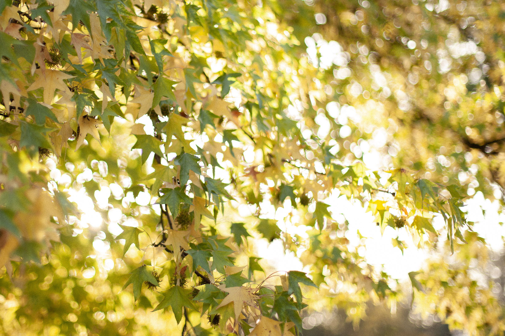
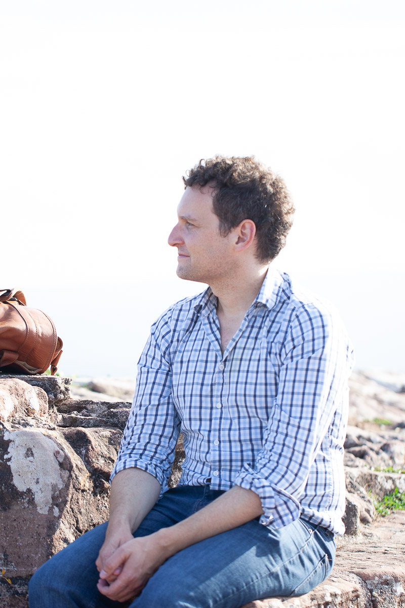

Tout commence par un échange.

Racontez-moi votre histoire
Un mariage qui se prépare, une séance photo à imaginer, ou peut-être un portrait qui vous fait envie depuis longtemps ? Chaque histoire commence quelque part, et j'aimerais beaucoup découvrir la vôtre.
Inutile d'avoir déjà tout organisé ou de savoir exactement ce que vous cherchez. Racontez-moi simplement vos envies, ou même vos hésitations. Nous prendrons le temps qu'il faut pour en discuter.
Écrivez-moi
Je suis basé en Alsace près de Saverne, et je me déplace volontiers dans toute la région et ailleurs pour photographier vos histoires. Vous pouvez me contacter directement par e-mail :
Suivez mon travail
Retrouvez-moi également sur Instagram, où je partage mes derniers reportages et quelques instants de mon quotidien de photographe.
